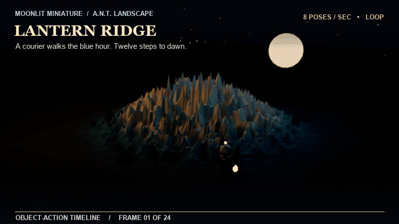
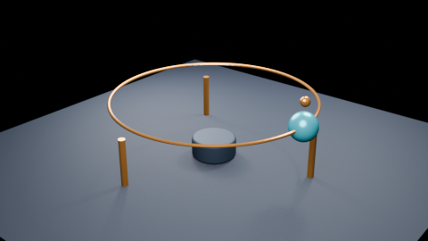
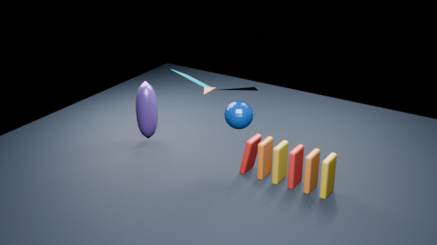
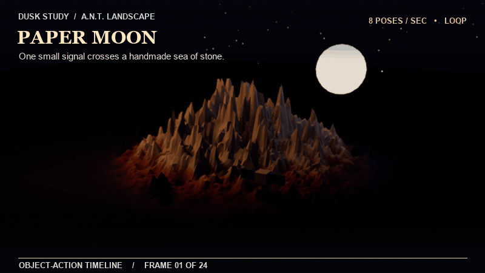

Lantern Ridge
A courier walks the blue hour. Twenty-four held steps carry one amber light across a handmade range.
Blender 5.x · Browser study 01
Three stop-motion fables, a constraint-driven orbit, and a small physics-and-rig study. Orbit the scene, scrub Blender-evaluated frames, or let the loop find its rhythm.
Each example is an editable .blend file. Direct object keys play natively; the two advanced studies also ship a sampled cache of Blender-evaluated geometry, so constraints, armature deformation, NLA, animated modifiers, and rigid bodies appear in the browser preview.

A courier walks the blue hour. Twenty-four held steps carry one amber light across a handmade range.

A signal follows a curve while a second beacon copies its location. The browser replays sampled evaluated frames from Blender.

A pose-driven sail repeats in NLA beside an animated twist modifier, a falling domino chain, and a bouncing marble.

One small signal crosses a handmade sea of stone in twenty-four held steps, pauses beneath the moon, then begins again.

The familiar default cube rises along Z, returns to the origin, and repeats its small stop-motion gesture.
The timeline reads direct object transform keys or a sidecar cache sampled from Blender’s evaluated scene. Playback starts automatically; the Loop checkbox and frame scrubber stay available in the embedded viewer.
Editable Blender 5.x files keep their constraints, armatures, NLA strips, modifiers, and rigid-body setup.
blender-viewer-bake.py records evaluated mesh geometry and world transforms into a compact .bva.gz sidecar.
The browser displays each sampled frame with Play, Loop, and frame controls. Blender—not JavaScript—runs the solvers.